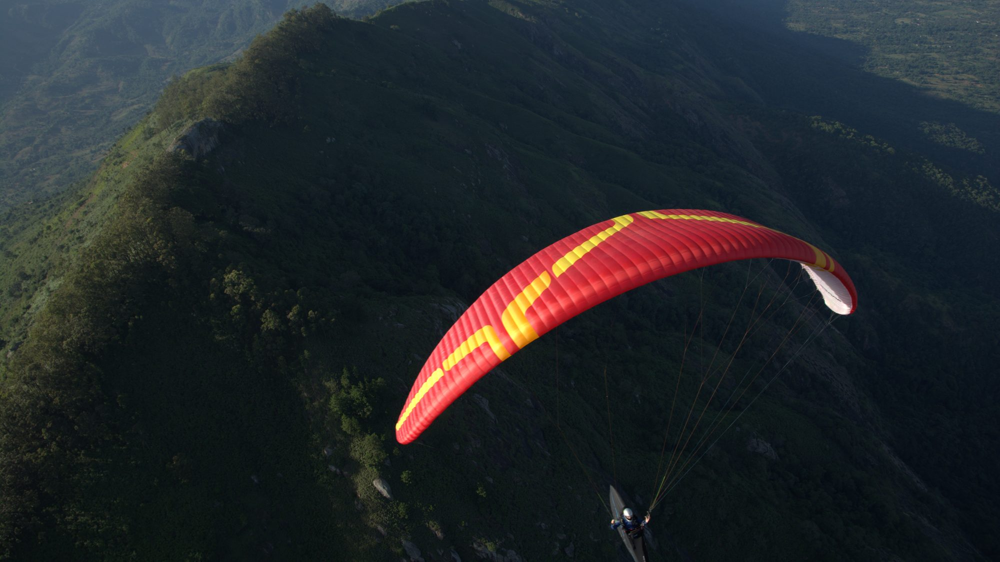
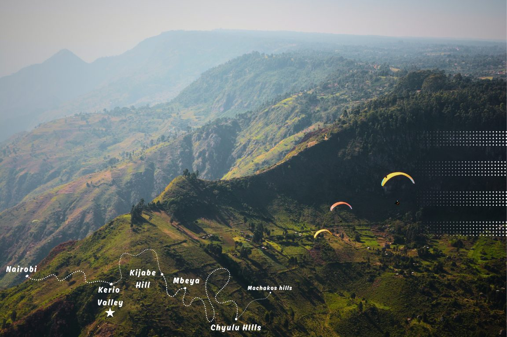
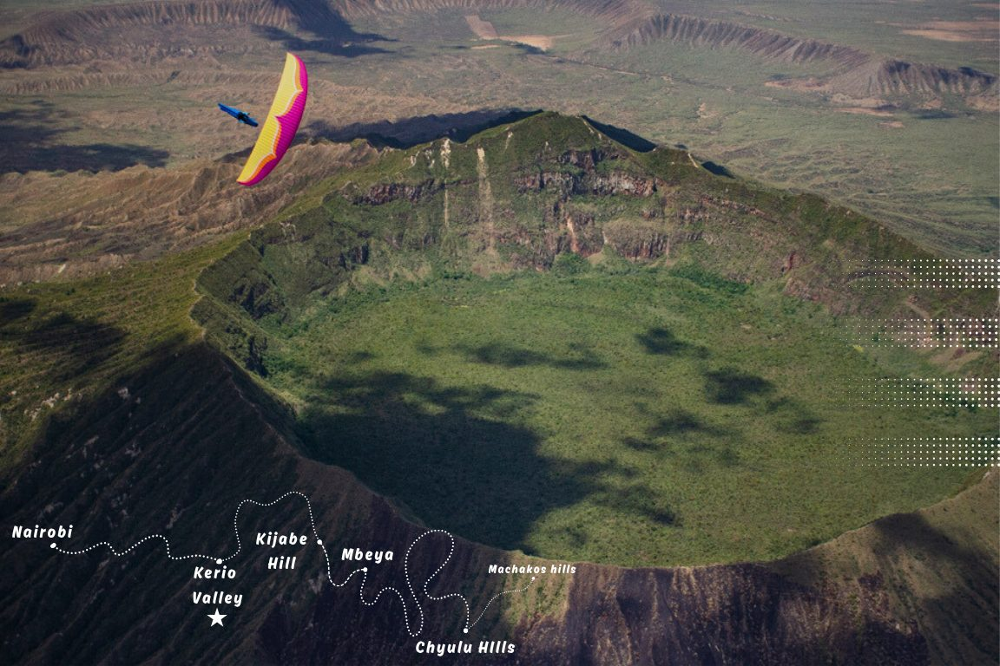
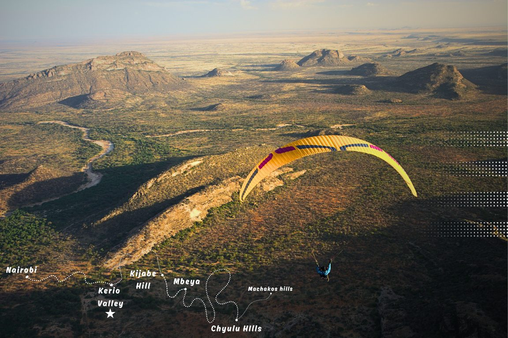
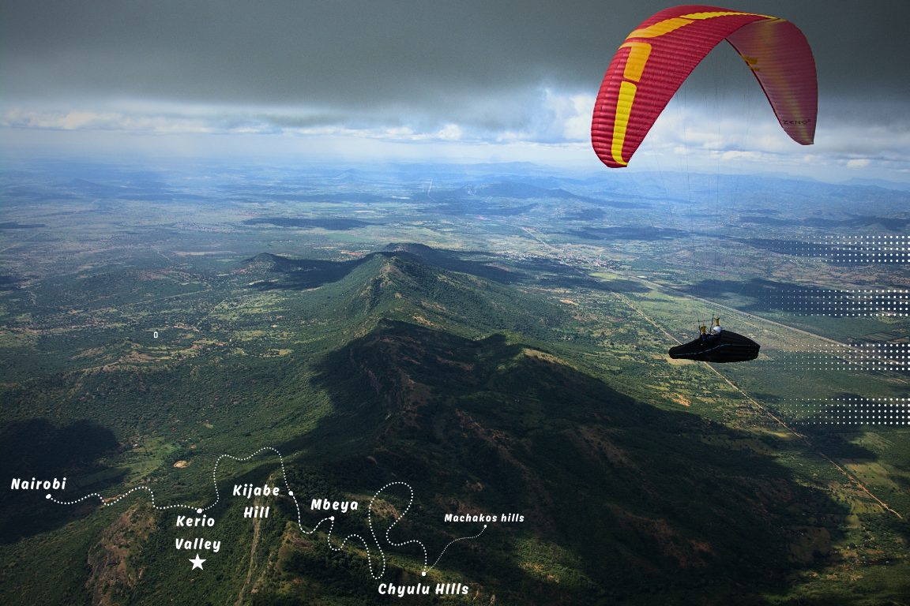
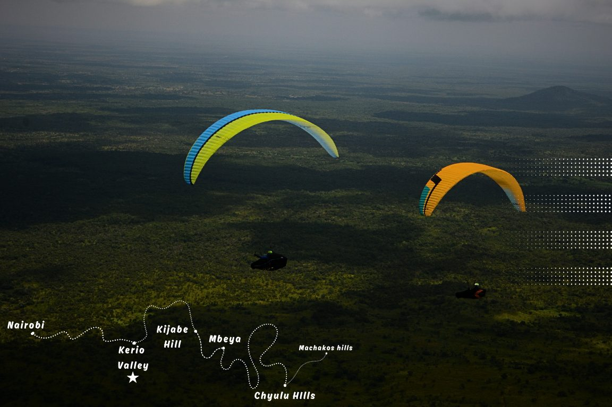

Kenya
Fly where humankind first walked. Rift Valley's endless skies await.
One line across the Rift, five different skies





An IPPI 2, APPI or equivalent national licence is the minimum. You need to be able to self launch and to land out on your own. Kenyan conditions are stronger than most home sites.
A flight of human genesis
Globally known as a hotbed of archaeological discoveries that shaped the story of human evolution, Kenya offers a great deal more than world class safaris. Flying a paraglider in the cradle of humankind means soaring over majestic landscapes, rich culture and genuinely awe inspiring scenery. Chase the world speed records in Kerio Valley, or cross the equator from above. This tropical paradise delivers like no other flying destination known to humankind.
Paragliding Atlas offers a tailored cross country adventure built on the local knowledge that lets our founding team consistently find the best lines, unlock remote landing zones, and safely share the skies of this landscape. Our expertise in East African flying has been accumulated over long years of reading the region's weather patterns and hidden gems, and our handpicked Kenyan and international pilots have logged countless hours over the savannah, in conditions that range from gentle soaring to potentially record breaking cross country flights.
We take off from the heart of the Great Rift Valley with direct access from our home base. You launch from the lush green takeoffs in Kerio, chase thermals over the Mau Mau Caves, and set your sights on the distant shores of Lake Naivasha. The itinerary is built around the best flying windows rather than a fixed schedule, with authentic cultural experiences for when your feet are back on the ground.
Our guides have extensive experience running retrieves from remote locations, with detailed flight plans and multiple communication systems in place for a swift pickup no matter where the sky takes you. We cannot control the weather. We can promise you are in the safest possible hands both in the air and on the ground.
We do not see our clients as clients. We see them as friends and fellow dreamers, pilots who like us have made exploring new horizons a priority. We know why you fly, because we feel the same way.

Let East African skies awaken your inner explorer, and leave you forever inspired.
What the air actually does here

Thermal strength
Variometer readings run from 1 to 2 m/s in the weak early morning and late afternoon, up to 4 to 6 m/s at the midday peaks, with rare surges to 7 m/s. Cores vary from narrow and turbulent to wide and smooth, and the type ranges from classic bubble thermals to dynamic triggers depending on where you are flying.
Flying season
Kenya's weather is set by its tropical location and the oscillating Inter-tropical Convergence Zone, which travels back and forth across equatorial Africa each year and gives the country two rainy seasons. Flying peaks in this equatorial paradise from December to March, which is when our tours run.
What this trip is actually like
We would rather you read this and decide it is not for you than arrive and find that out. Explore the Cradle is built for independent pilots with strong glider handling and an appetite for the unfamiliar. We put flight safety first, because that is what keeps the fun factor intact.

Every flight is a good flight, but chasing airtime comes with bumpy air, variable thermal strength and conditions more demanding than you expected. That is part of it. Come willing to push your limits and you leave with a renewed understanding of flying in new terrain.
How a day runs
Your guide proposes the day's plan to maximise flying, and briefs you on the forecast, the site and the conditions. He suggests cross country directions and where a retrieve is realistic. He launches first to check the air, or last to help with an awkward takeoff. Then we fly the route together, or improvise over the radio when the day has other ideas.
Why you have to be autonomous
Most of Kenya sits under moderate easterly winds, so waiting for each other in the air is often simply not possible. You need to take off, fly, decide and land on your own. That is not a formality on this trip, it is the thing that makes the trip work at all.
Flying conditions, honestly
Some of what we fly is quiet and picturesque. The XC sites, Kerio and Machakos among them, can be rough through sections of a flight, and near the escarpments you can meet heavier turbulence than you were expecting. You will hit bumpy airmass and some genuinely awkward transitions. That is the adventure rather than a failure of planning.
Retrieve is a two way job
The retrieve driver is radio equipped, understands live tracking and cross country flying, and is briefed before each flight on the likely routes. After you land, though, you are the one who activates and directs him, because the others may still be in the air. Kenya's generous conditions produce long flights, and a long flight means a long retrieve.
Getting yourself out
Speeding up your own retrieve helps everyone. A landing in Kenya almost always attracts someone on a motorbike, a boda, offering you a lift. Practise your negotiating, get to the nearest tarmac, shop or restaurant, and put a little money into the local economy and a good impression of paraglider pilots along with it. From the tarmac the matatu vans will take you on, crowded and cheerful.
Do not drive at night. If you land a long way out, sleep locally and rejoin the group in the morning.
This is not a comfort tour
If you expect polished service and comfort, this is the wrong trip. Kenya is a young destination with cross country routes still being worked out, and it asks for improvisation, flexibility and tolerance in return for what it gives you.
You are sharing a sky and a bill
Pilots on the same tour share the same transport costs, whether they flew 20 kilometres or 120. Some days that is a test of how you take other people's good fortune. Most days it is the pleasure of being genuinely glad someone else got the flight of their life.
Six sites, one valley system
Kerio Valley is the base. Everything else is within reach of it, and the tour moves with the conditions rather than a fixed schedule.
Kerio Valley
0.72°N · 35.65°EThe base for the tour, and the site where the world speed records are chased.
Rift Valley National Park
0.90°S · 36.30°EFlying over the floor of the Great Rift, the geological scar that runs the length of the country.
Kijabe Hill
0.93°S · 36.58°EAn escarpment site on the eastern wall of the Rift, north west of Nairobi.
Mount Longonot Crater
0.91°S · 36.45°EA dormant stratovolcano with an intact crater rim, and one of the more photographed flights of the trip.
Machakos Hills
1.52°S · 37.26°ERolling hills south east of Nairobi, and a change of character from the Rift walls.
Chyulu Hills
2.68°S · 37.88°EA young volcanic range between Tsavo and Amboseli, with Kilimanjaro on the horizon.
The practical country
Capital
Nairobi. Founded 1899, elevation 1,795m.
Population
57.7 million, the 7th most populous country in Africa and 27th globally. Area 569,140 km².
Currency
Kenyan Shilling (KES). Cash is used widely, ATMs are common in big towns only, and Mpesa is the preferred digital payment method.
Language
Swahili and English. Kenya has over 60 further ethnic languages.
Visa
Check the requirements for your own nationality before you travel.
Power
240 volts at 50 Hertz, plug type G, the UK socket.
What pilots ask before booking
What skill and fitness level is required?
This is an XC adventure tour for autonomous pilots. The minimum is being able to manage your own takeoffs and outlandings, with strong thermalling and ridge soaring skills recommended. An SIV course is highly desirable for handling collapses and turbulence.
Fitness: good condition for hikes to launch at moderate elevation, gear handling, and four to six hour active flying days in heat. You should be able to trek uneven terrain with a 10 to 15 kg pack.
What equipment is provided?
We provide certified rental wings only, for a fixed fee on request, and that is first come first served, so tell us in good time. Group safety items including first aid and retrieve support are covered.
You bring your own EN or LTF certified wing, harness, reserve, helmet and vario or GPS. Hiking boots and thermal layers are recommended.
Will I get my own guide?
No, there are no dedicated one to one guides on this tour. Pilots are led by one or two expert instructors at a maximum ratio of one to three. Personalised XC guidance, weather briefings and retrieve help are provided to the group, focused on collective safety and maximising flights.
Does the price include travel?
The base price covers local transport by 4WD van, guiding, park entry for flying activities, takeoff fees, and Paragliding Association of Kenya membership. Transfers from the airport to the meetup point in Nairobi can be arranged on request.
What insurance do I need?
Travel insurance covering paragliding at altitudes up to 4,000m. It must include helicopter rescue for retrieves from remote regions, and medical evacuation and treatment covering local hospitals plus international repatriation.
Standard travel insurance often excludes adventure sports, so read the wording rather than assuming.
What is the cancellation policy?
The deposit is not refunded, and if you cancel there is a termination fee that on a trip like this is usually most of the price, because permits, guiding and local arrangements are committed months ahead. It is calculated as the price less what we save and less anything we recover by reselling your place, and we will show you the working. The balance is due 120 days before departure. This is exactly why we push trip cancellation insurance so hard. Full detail in the booking terms.
Before you fly, and what to bring
Terrain runs from 1,000 to 2,000m. It can be hot in the lowlands and cold at height, so pack for both.
- Takeoffs sit between 1,000 and 2,000m, and you can expect to climb to 4,000m, where it is cold.
- Kenyan conditions are stronger than most home sites. Bring gear you trust.
- Helicopter rescue and good healthcare are both available.
Clothing
Long trousers and long sleeves against thorns, sunburn and mosquitoes. Comfortable hiking shoes. Two pairs each of socks, underwear and t-shirts. Flying gloves, because it gets cold at 4,000m. Sunscreen and sunglasses. A warm flying jacket. A buff for the dusty roads. Ear plugs for noisy hotels.
Equipment
A wing you know well and a harness with sufficient back or airbag protection. Spare lines and ripstop tape, because takeoffs and landings can be bushy and thorny. A 2m radio on 144 to 146 MHz from Yaesu, Icom or Kenwood; avoid Baofeng, because reliable communication can save your life. Powerbank and cables, a headlamp, pepper spray against dogs or wild animals, and a pocket knife.
Health
No mandatory vaccines for travellers from Europe or America. Malaria risk is low in the dry season of January and February, especially in the highlands above 2,000m; prevention is best, with shoes, high socks, long trousers and long sleeves, and pre-medication can be bought locally. Bring DEET repellent. Hotel beds usually have nets.
Stomach and healthcare
Local food can upset tender Western stomachs. FloraNorm, a Saccharomyces boulardii probiotic, is available locally. Kenya has good healthcare and helicopter rescue is available.
Flying in Africa, and how to do it well
Paragliding is still new across much of the continent, and how visiting pilots behave shapes what the next ones are allowed to do. This is distilled from thirteen years of Nikolay Yotov's exploration in Ethiopia and Kenya. He is also the guest on the Kenya episode, if you would rather hear it in his own words.
How you are read
You may be seen as progress, as wealth, or with suspicion: spying, drones, something military. None of that is unreasonable given the history. Read up on the communities, the security picture and the recent past of anywhere you are heading before you get there.
The approach that works
Be open, enthusiastic and positive, and greet everyone, including the unsmiling ones. Ask locally about security, wild animals and access, because that knowledge is not in any guidebook. Explain your plan clearly: misunderstandings about where you intend to take off are the single most common problem.
Hiring porters is usually welcome. In some communities men will not take portering work, and offering a guiding or security role instead is the respectful move rather than pressing the point.
Prices and tipping
Agree a price in advance, even when someone waves it off. Numbers get misheard, and 15, 50 and 500 are easy to confuse in a second language on a windy hillside.
Tip 20 to 50 per cent for good work, and nothing extra for a rip off. Fairness runs both ways. Pay for the things you cannot see, like a path an ancestor cut or the fact that nothing with teeth came near you. Hire from the community closest to the site, or you create jealousy you will not be around to resolve.
When you are asked for money
Giving cash directly tends to make things worse for the pilot behind you. Share food or buy someone a meal instead. Saying plainly that it would not be fair to give to one person and not the rest is usually understood and accepted.
Better still, give work as a porter or guide, or donate to a local organisation. Avoid handing out your phone number or email, because it turns into requests for money later.
Landing protocol
Avoid schools, markets and crowds. Land somewhere remote but reachable by a vehicle. Pack fast with a quick pack sack, then deal with yourself and send your location; repack properly later.
People will arrive, and quickly. Greet the children with enthusiasm, find the elders or the leader, and ask them to help keep a clear space. Fly with live tracking and a driver you trust.
Staying and moving
In remote areas you will camp or stay in somebody's house. Take your shoes off, wash your feet, compliment the food, and follow your host's lead on who it is appropriate to address. Pay discreetly, often to the woman running the household, and expect around half the price of a standard hotel.
Public transport is crowded and good fun, and your glider bag may double the fare, which is fair. Hitching, offer close to the bus fare and do not haggle below it; going lower is taken as an insult, not a bargain. A hired driver who negotiates, handles gear, keeps crowds back and will drive at night to fetch you is worth 50 to 100 dollars at the end of the trip. Avoid driving at night yourself. If you land a long way out, sleep where you landed.
Permissions and officials
The old rule is that it is better to say sorry than to ask permission, and paragliding is not explicitly illegal where the law does not describe it at all. That logic runs out in tense regions, where being arrested is a real outcome and official permission saves a great deal of time.
Kenya is the easy case. The tourism sector is used to foreigners and no special permits are needed for what we do on this tour.
You are the precedent
There are few enough of us flying here that you are not an anonymous tourist. You are the paraglider pilot that community has met, and possibly the only one they will meet this year. What you do sets the terms for everyone who comes next.
Three departures
Each departure runs 12 days from Kerio Valley.

What makes Paragliding Atlas different
Experience intimate, expert led flying in world class destinations. Skip the crowds with small group tours in iconic skies over untamed terrain, fully guided from launch to landing and beyond.
Flight safety, first and always
In aviation there is a saying: if it is controllable, then control it. We don't leave things to chance, because when the air is perfect flying feels effortless, and when turbulence hits Paragliding Atlas has your back. On-site fixes, weather mastery and rescue readiness mean we master every detail beforehand, so you stay safe aloft and soar worry free.
Because we care to share
Sharing our passion for the art of flight isn't just meaningful, it is our purpose. We go the extra mile because your breakthroughs, safety and joy in the skies matter to us. That goodwill soars beyond the skies too: by flying with us you help uplift local communities through welfare, training and opportunities for the next generation.
Exclusive journeys
We are a group of like minded pilots who craft each trip with passion, creativity and teamwork. We handcraft every tour with obsessive precision, so Paragliding Atlas delivers flights that feel like they were dreamed up just for your soul.
Hear the site from someone who flies it
Pre PWC Kenya: Nikolay Yotov
Nikolay Yotov of Skynomad takes the show to Africa for the first time, on flying in Kenya ahead of the pre World Cup held there. It covers what the sites are actually like and what it means to share that airspace with the wildlife below.
Ready To Touch The Sky With Glory?
Book a free 30-minute, no obligation virtual call
Whether you're a 10 hour pilot eyeing your first 50 or a longtime sky veteran chasing your next world record, we specialize in turning ambition into airtime. This relaxed no-expectations intro call helps you cut through the unknowns with straight talk.
We'll break down:
- Ideal tour match for your skill and dreams (Kenya, India, or Peru)
- Fitness and wing experience required
- Gear list, dates, and costs
- What you'll get in end-to-end guidance from Paragliding Atlas